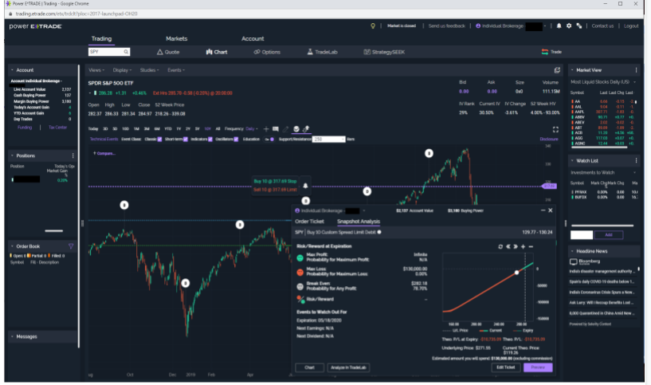
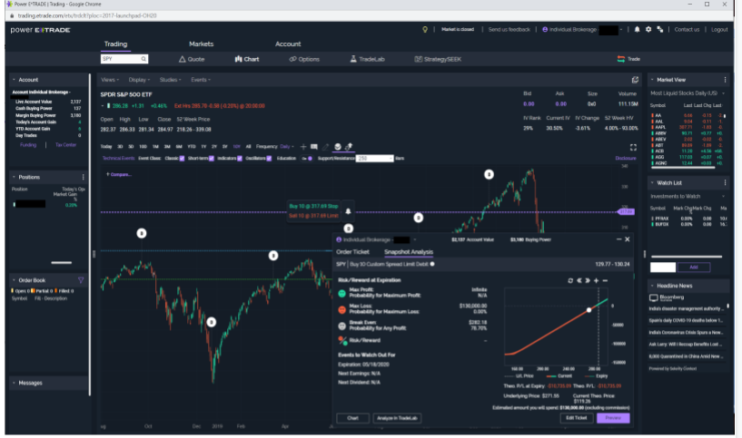
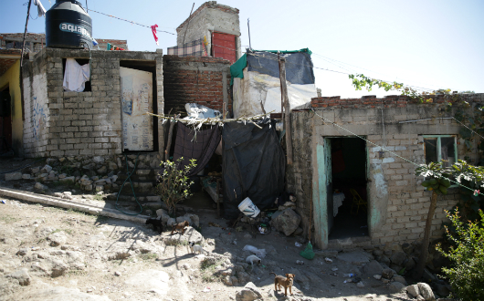

Qunatative Trading Research
 

I created a 32 page research paper called an I-Search on Quantatative trading and it's history in the stock market. It is using coded prorgrams and algoriths
to automatically trade to improve efficiency. In this paper I interveiw David Readerman (CEO of Rock Breach) for insight.
This was a project that I made for my english class that was the majority of our grade for the year.This project inspired me to enter the trading world.
Mexico Work
I took a trip to Tijuana, Mexico with a group of other students. Here we found families in need of shelter and built them a home.
We were there for a weeks and the building was vigourous but rewarding.
This was trip for my community church that a lot of other students attended. It was an eye opening expirience and taught how much more I have and how good it feels to help others.